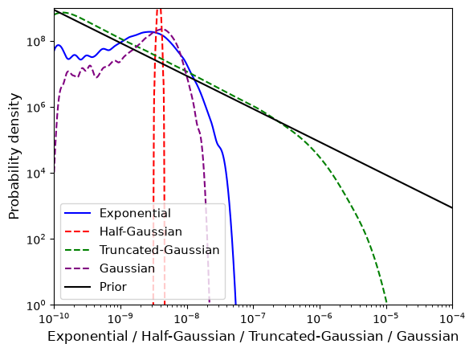
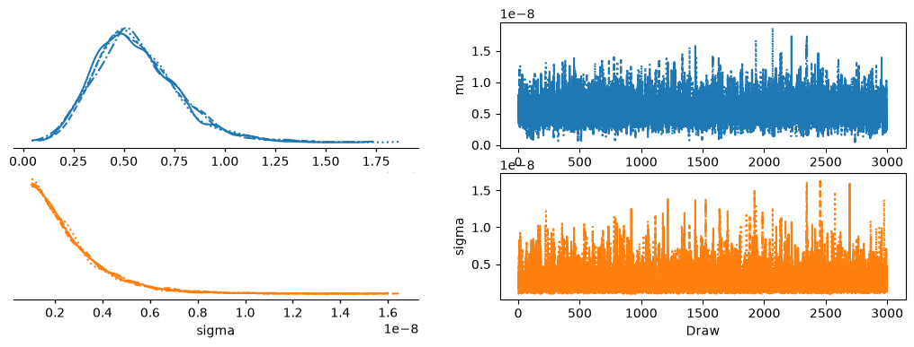

Astrophysics & Research
Here are some research projects I've done! These were incredibly interesting endeavors, and I'm very grateful for these experiences and the professors that helped me along the way.
Hierarchical Bayesian Analysis of Pulsar Ellipticity Hyperparameters
Relevant Topics: Hierarchical Bayesian Inference, Gravitational Waves, Data Analysis, Pulsars
What the project was: For the summer of '26 I wanted to learn more about data analysis, and was especially interested in its applications in astrophysics. So, after speaking with Professor Max Isi, he offered to show me the ropes of hierarchical Bayesian inference in the context of constraining pulsar ellipticities, with the end goal of running these models on the newest batches of processed LIGO data. For context, general relativity predicts that pulsars, like merging black holes, emit gravitational waves. The difference, however, is that pulsars "release" these waves continuously. Unlike inspiraling black holes, which emit intense transient waves, these pulsars emit quiet continuous gravitational waves, order of magnitude quieter than the merger counterpart. What enables pulsars to emit these continuous waves is little deformations on their surfaces, creating a quadrupole (or higher multipoles) that would emit a gravitational wave. These deformations are called ellipticities, and are exactly what I was looking for.
Day to day: Much of the time was spent exploring hierarchical modeling and making sure I understood exactly what was going on behind the hood, from the basics of bayesian statistics to numpyro sampling. There was an especially big focus on the creation of hierarchical models themselves, and the statistical theory behind it. Parameter marginalization is such an interesting and incredibly powerful tool, its kind of crazy.
The nitty gritty: Data was taken from the ATNF Pulsar Catalogue, LIGO S6, and proprietary posterier samples from LIGO O4. Data analysis was done in python using NumPyro and JAX, specifically NumPyro NUTS and various classes from NumPyro.distributions. Check out my github.


Code: View on GitHub!
Research Project Two Name
Skills: MATLAB, Signal Processing, Statistics
What the project was: Describe the research question, the project's goal, and any lab or advisor it was done with.
My role: Describe what specifically you worked on within the project.
Technical details: Describe the methods, datasets, models, or instruments involved.